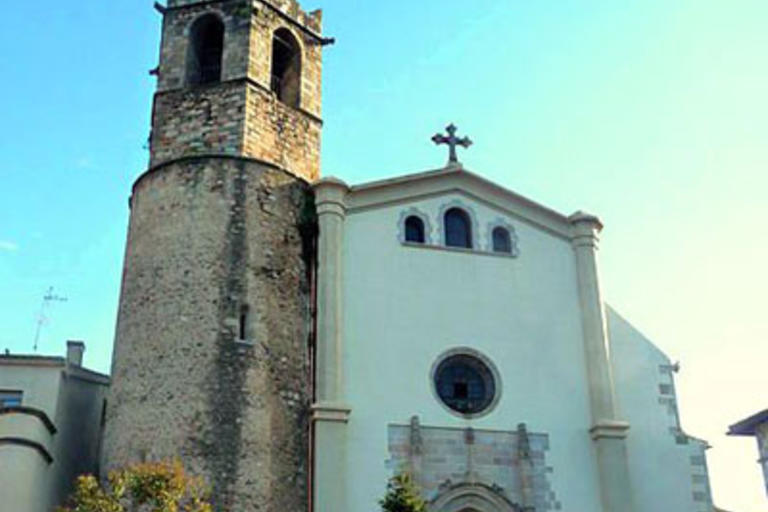

Visita · Palautordera
El temple és un edifici gòtic tardà, molt ben proporcionat, cobert de nervions amb claus de volta esculpides de sants d'antiga devoció, com la Mare de Déu, Sant Pere, Sant Burget i Sant Isidre. La…
Obre-ho a l'app ›